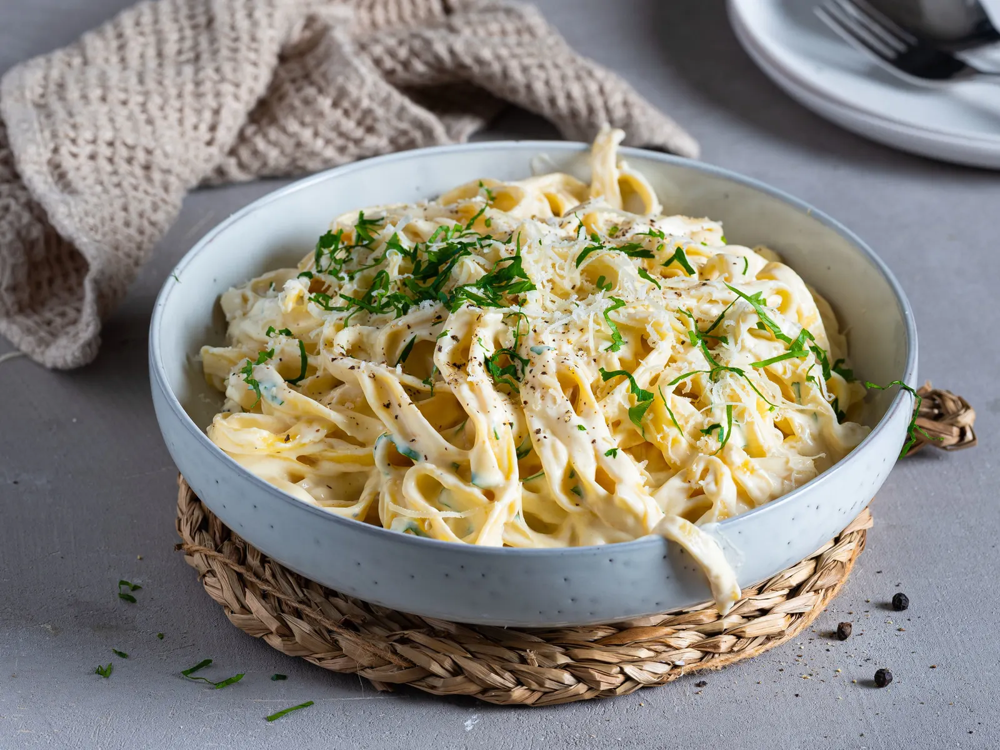

Our Story

Welcome to La Bella Tavola, where every dish tells a story. Here’s a bit of what makes us unique:
- Our Heritage: Rooted in authentic Italian traditions, inspired by generations of family recipes from the heart of Italy.
- Quality Ingredients: We carefully source the freshest, finest ingredients to bring bold, authentic flavors to your plate.
- Handcrafted with Passion: Each meal is crafted by our skilled chefs, blending time-honored techniques with a touch of innovation.
- Warm Atmosphere: Experience a cozy, rustic ambiance that feels like dining at a friend’s Italian home.
- A Place for Every Occasion: From casual dinners to special celebrations, our tables are open for moments big and small.
- Fine Wine Selection: Enjoy a curated collection of wines to pair perfectly with your meal.
Whether you’re here for a taste of Italy or a place to make new memories, we’re honored to welcome you. Buon appetito!
We’re here to serve you authentic Italian cuisine every day of the week. Our hours are as follows:
| Days Open | Mon | Tue | Wed | Thu | Fri | Sat | Sun | |
|---|---|---|---|---|---|---|---|---|
| Time | 10am-10pm | 10am-10pm | 10am-10pm | 10am-10pm | 10am-10pm | 10am-12pm | 10am-12pm |